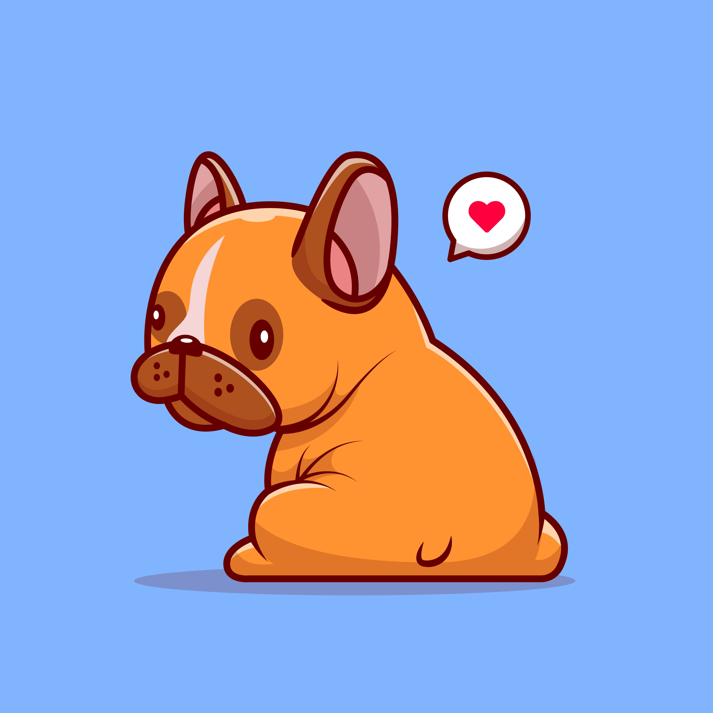

Test de amor
Atras
1. ¿cual es el ingrediente más importante en una relacion?
Confianza
Comunicacion
Respeto
Validar
2. ¿Qué se asocia frecuentemente con el estar "enamorado"?

Mariposas en el estómago
Antojos de comida
Dolores musculares
Validar
3. ¿Cuál es una de las claves para tener una relación estable?
Darse cuenta cuándo estás equivocado
Siempre tener la razón en todo
Cambiar constantemente de opinión
Validar
4. ¿Qué se recomienda hacer si tu pareja y tú discuten?
Ofender a tu pareja
Dialogar cuando cuando estén más calmados
No hablar por varios días
Validar
5.¿qué tipo de amor puede durar toda la vida?
El amor maduro y cultivado con paciencia
El amor a primera vista
El amor romántico
Validar
6. ¿Qué es una forma de demostrar amor en la cotidianidad?
Comprar muchos regalos caros
Ayudar con los quehaceres del hogar
Presumir la relación en redes sociales
Validar
7. ¿Qué se recomienda para avivar la llama de la pasión?
Rutina y monotonía
Discusiones y reclamos
Sorpresas y novedad
Validar
8. ¿Qué se debe evitar por el bien de la relación?
Escuchar a tu pareja con atención y respeto
Mentiras y engaños
Expresar tus sentimientos
Validar
9. ¿Cuál es otra palabra para referirse al amor verdadero?
Compromiso
Obsesión
Media naranja
Validar
10. ¿Cuándo es importante buscar ayuda profesional en la relación?
Cuando hay violencia o maltrato
Cuando hay diferencias menores
Nunca es necesario
Validar
¿TE A GUSTADO?
¡SI!
!NO¡
Validar